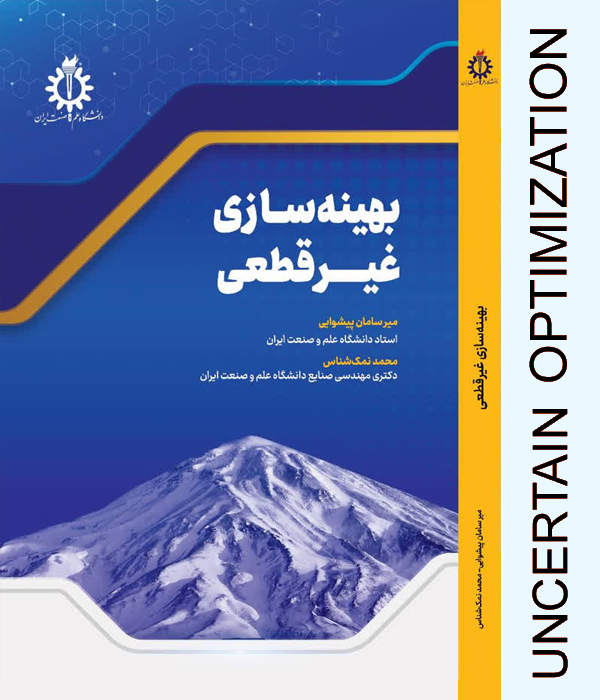

در این کتاب سعی شده ابعاد مختلف موضوع عدمقطعیت در تصمیمگیری و روشهای ریاضی برخورد با آن به دقت در کتاب مورد موشکافی قرار گرفته و به نیازهای آکادمیک و حرفهای دانشجویان، پژوهشگران و مدیران پاسخی مناسب داده شود. کتاب حاضر در چهار فصل سازماندهی شده است. در فصل اول، به منظور ایجاد یک درک عمیق از عدمقطعیت، به فلسفه، مفاهیم و گونهشناسی عدمقطعیت و روششناسیهای برخورد با آن در مسائل برنامهریزی ریاضی پرداخته شده است. فصل دوم کتاب به روششناسی برنامهریزی تصادفی و انواع روشهای آن اختصاص یافته است. سیاق کتاب بر این است که تمرکز بیشتری بر روشهای برنامهریزی استوار داشته باشد. در فصل سوم، روشهای بهینهسازی استوار مبتنی بر مجموعههای عدمقطعیت بسته تشریح شدهاند. فصل چهارم کتاب به روشهای برنامهریزی ریاضی فازی اختصاص یافته و حسب سیاق این کتاب، در بخش پایانی این فصل، انواع روشهای برنامهریزی فازی استوار تشریح شدهاند.
دانلود فهرست مطالب